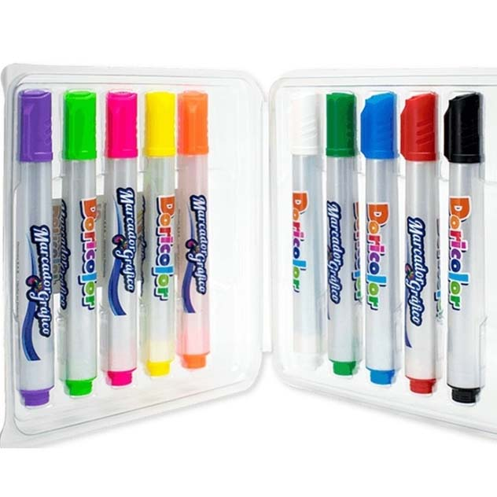

Encuentra aquí tus útiles escolares en línea

Cudernillo Argollados
Un cuaderno argollado es práctico y resistente, con espiral metálico que permite girar las hojas 360°. Disponible en diferentes tamaños y diseños, ofrece hojas rayadas, cuadriculadas o blancas, ideal para uso escolar, universitario o profesional$15.000
Colores
Los colores ideales para dibujar, pintar o resaltar trabajos escolares y artísticos. Se encuentran en cajas de diferentes cantidades, con tonos vivos y resistentes, perfectos para estimular la creatividad en niños, jóvenes y adultos.
$20.200
Marcadores
Los marcadores son herramientas de escritura y dibujo que permiten crear líneas y trazos de diferentes grosores. Ideales para resaltar textos, dibujar o crear obras de arte, están disponibles en una amplia gama de colores y estilos.
$100.000
Cartulinas en pliego
La cartulina en pliego es un material grande, resistente y versátil, disponible en diversos colores. Es ideal para manualidades, presentaciones, maquetas y trabajos escolares, ya que su superficie lisa permite recortar, doblar, pegar o decorar con facilidad, adaptándose a múltiples proyectos creativos.

$100.000
Lapiceros de colores
LLos lapiceros son herramientas de escritura prácticas y duraderas, disponibles en diferentes colores y tipos de tinta. Suelen tener punta fina o media para un trazo fluido y cómodo, ideales para uso escolar, universitario, de oficina o personal.